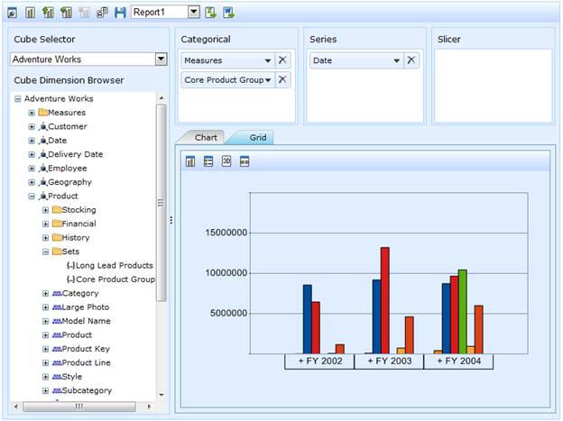

OLAP Client now supports binding of OLAP data with named set records pre-defined in cube. A named set is a collection of tuples and members which can be defined and saved as a part of the cube definition. Named set records reside inside the sets folder, which is under a dimension element. These elements can be dragged to Categories/Series/Slicer axis of Axis Element Builder. To help make working with a lengthy, complex, or commonly used expression easier, Multidimensional Expressions (MDX) lets you define a named set.
The Cube Dimension Browser displays the Dimensions and Measures along with the named set, from the selected cube, inside a tree on the left. To visualize these members, you can drag the members to the Axis Element Builder area.

Figure 44: Named Set Records
Sample Link
A sample demo is available at the following link:
..\Syncfusion\EssentialStudio\<Version Number>\BI\Web\OlapClient.Web\Samples\3.5\OlapClient\ OlapClientDemo